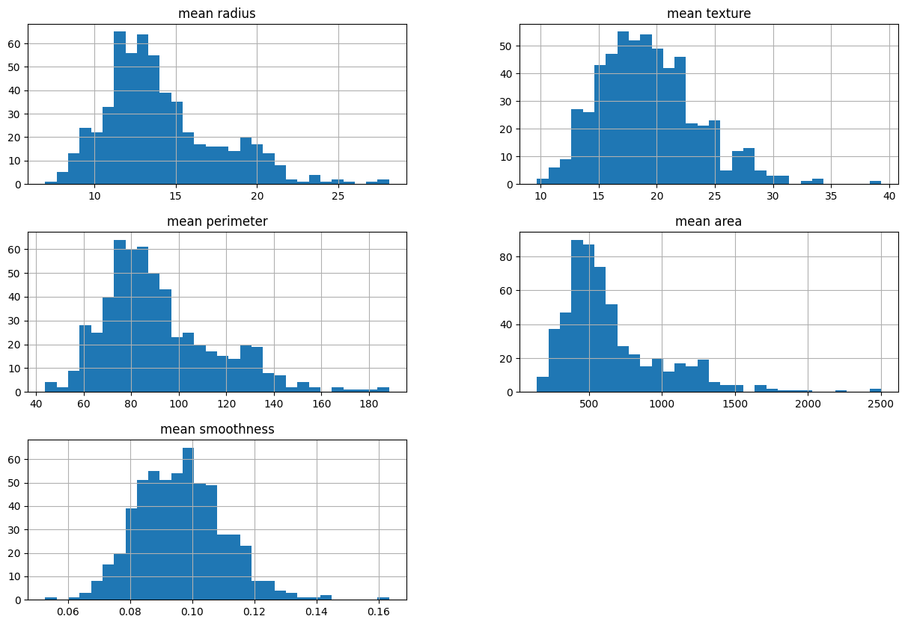
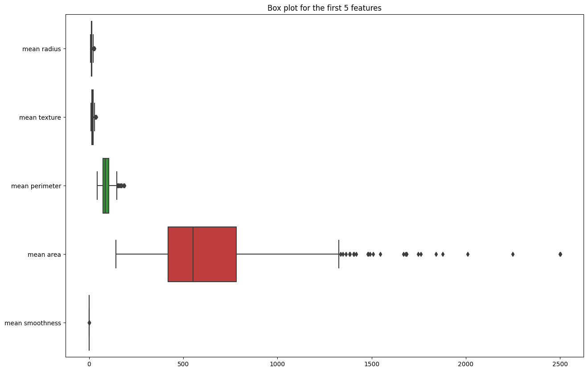
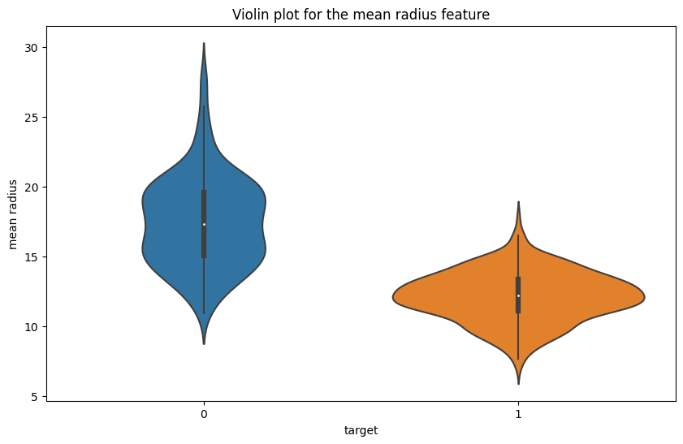
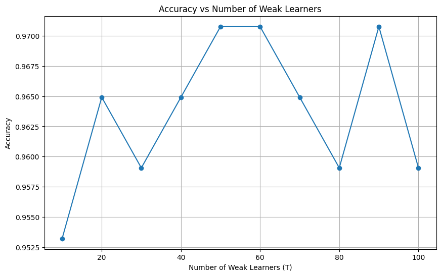

# Basic Libraries
import numpy as np
import pandas as pd
# Load Data
from sklearn.datasets import load_breast_cancer
# Split Data
from sklearn.model_selection import train_test_split
# Data Visualization
import matplotlib.pyplot as plt
import seaborn as snsAdaBoost
By Cristian Leo
Article Link: https://medium.com/stackademic/building-adaboost-from-scratch-in-python-18b79061fe01 ## Import Libraries
Build AdaBoost From Scratch
Decision Stump Function
# A simple implementation of a weak classifier - decision stump
def decision_stump(X, y, weights):
# Get the number of features in the dataset
num_features = X.shape[1]
# Initialize the best stump and the minimum error
best_stump = {}
min_error = float('inf')
# Loop over each feature in the dataset
for feature in range(num_features):
# Get the unique values of the current feature
feature_values = np.unique(X[:, feature])
# Loop over each unique value as a potential threshold
for threshold in feature_values:
# Loop over the two possible inequalities
for inequality in ["lt", "gt"]:
# Initialize the predictions to 0
predictions = np.zeros(len(y))
# If the inequality is "lt", set the predictions to 1 where the feature values are less than or equal to the threshold
if inequality == "lt":
predictions[X[:, feature] <= threshold] = 1
# If the inequality is "gt", set the predictions to 1 where the feature values are greater than the threshold
else:
predictions[X[:, feature] > threshold] = 1
# Calculate the misclassified examples
misclassified = predictions != y
# Calculate the weighted error by taking the dot product of the weights and the misclassified examples
weighted_error = np.dot(weights, misclassified)
# If the weighted error is less than the current minimum error, update the best stump and the minimum error
if weighted_error < min_error:
min_error = weighted_error
best_stump['feature'] = feature
best_stump['threshold'] = threshold
best_stump['inequality'] = inequality
best_stump['predictions'] = predictions
# Return the best stump and the minimum error
return best_stump, min_errorMain AdaBoost Model
# AdaBoost implementation
class AdaBoost:
"""
This class implements the AdaBoost algorithm, a boosting algorithm that combines multiple weak classifiers
to create a strong classifier. The weak classifiers are trained in a sequential manner, where each classifier
is trained to correct the mistakes of the previous classifiers. The final prediction is a weighted vote of
the predictions of the weak classifiers.
Attributes:
T (int): The number of weak classifiers.
weak_classifiers (list): A list to store the weak classifiers.
Methods:
fit(X, y): Trains the AdaBoost model on the given data.
predict(X): Makes predictions on the given data using the trained model.
"""
def __init__(self, T=50):
self.T = T # Number of weak classifiers
self.weak_classifiers = [] # List to store the weak classifiers
def fit(self, X, y):
# Initialize weights uniformly
weights = np.full(len(y), (1 / len(y)))
# Train T weak classifiers
for _ in range(self.T):
# Get the best decision stump and its error for the current weights
stump, error = decision_stump(X, y, weights)
# Handle zero error case to avoid division by zero
if error == 0:
error = 1e-10
# Compute alpha (amount of say)
alpha = 0.5 * np.log((1 - error) / error)
# Store alpha in the stump
stump['alpha'] = alpha
# Add the stump to the list of weak classifiers
self.weak_classifiers.append(stump)
# Update the weights
predictions = stump['predictions']
# Adjust y from {0, 1} to {-1, 1} for weight update
adjusted_y = np.where(y == 0, -1, 1)
# Update weights based on the predictions
weights *= np.exp(-alpha * adjusted_y * (2 * predictions - 1)) # predictions are {0, 1}, converting to {-1, 1}
# Normalize the weights
weights /= np.sum(weights)
def predict(self, X):
# Initialize final predictions
final_predictions = np.zeros(len(X))
# For each weak classifier
for stump in self.weak_classifiers:
# Initialize predictions to 0
predictions = np.zeros(len(X)) # default to 0
# Get the feature, threshold, and inequality from the stump
feature = stump['feature']
threshold = stump['threshold']
inequality = stump['inequality']
# Make predictions based on the feature, threshold, and inequality
if inequality == "lt":
predictions[X[:, feature] <= threshold] = 1
else:
predictions[X[:, feature] > threshold] = 1
# Add the weighted predictions to the final predictions
final_predictions += stump['alpha'] * (2 * predictions - 1) # converting {0, 1} to {-1, 1}
# Return the final predictions, converting {-1, 1} back to {0, 1}
return np.where(final_predictions >= 0, 1, 0) # return {0, 1} based on sign of final_predictionsFinetuning and Visualization Class
class AdaBoostTester:
"""
This class is designed to test the performance of the AdaBoost algorithm with different numbers of weak learners.
It provides methods to train the model, test its accuracy, and plot the accuracy against the number of weak learners.
Attributes:
X_train (numpy.ndarray): The training data.
y_train (numpy.ndarray): The labels for the training data.
X_test (numpy.ndarray): The testing data.
y_test (numpy.ndarray): The labels for the testing data.
accuracies (list): A list to store the accuracy of the model for each number of weak learners.
best_accuracy (float): The best accuracy achieved by the model.
best_model (AdaBoost): The model that achieved the best accuracy.
Methods:
test(T_values): Trains an AdaBoost model for each value in T_values, tests the model's accuracy on the test set,
and keeps track of the model with the best accuracy.
plot(T_values): Plots the accuracies against the number of weak learners.
get_best_model(): Returns the model that achieved the best accuracy.
get_best_accuracy(): Returns the best accuracy achieved by the model.
"""
def __init__(self, X_train, y_train, X_test, y_test):
# Initialize the training and testing data, the list of accuracies, and the best model and accuracy
self.X_train = X_train
self.y_train = y_train
self.X_test = X_test
self.y_test = y_test
self.accuracies = []
self.best_accuracy = 0
self.best_model = None
def test(self, T_values):
# For each value in T_values, train an AdaBoost model and test its accuracy
for i, T_value in enumerate(T_values):
# Initialize and train the AdaBoost model
adaBoostModel = AdaBoost(T=T_value)
adaBoostModel.fit(self.X_train, self.y_train)
# Make predictions on the test set and calculate the accuracy
predictions = adaBoostModel.predict(self.X_test)
accuracy = (predictions == self.y_test).mean()
# Add the accuracy to the list of accuracies
self.accuracies.append(accuracy)
# Print the progress
print(f"T = {T_value}, Test Accuracy = {accuracy:.2%} | {(i+1)/len(T_values):.2%} complete")
# If this model has the best accuracy so far, update the best model and accuracy
if accuracy > self.best_accuracy:
self.best_accuracy = accuracy
self.best_model = adaBoostModel
def plot(self, T_values):
# Plot the accuracies against the T_values
plt.figure(figsize=(10, 6))
plt.plot(T_values, self.accuracies, marker='o')
plt.title('Accuracy vs Number of Weak Learners')
plt.xlabel('Number of Weak Learners (T)')
plt.ylabel('Accuracy')
plt.grid(True)
plt.show()
def get_best_model(self):
# Return the best model
return self.best_model
def get_best_accuracy(self):
# Return the best accuracy
return self.best_accuracyLoad Breast Cancer Dataset
cancer = load_breast_cancer()
X, y = cancer.data, cancer.target
# Create a DataFrame
df = pd.DataFrame(X, columns=cancer.feature_names)
df['target'] = y
df.head()| mean radius | mean texture | mean perimeter | mean area | mean smoothness | mean compactness | mean concavity | mean concave points | mean symmetry | mean fractal dimension | ... | worst texture | worst perimeter | worst area | worst smoothness | worst compactness | worst concavity | worst concave points | worst symmetry | worst fractal dimension | target | |
|---|---|---|---|---|---|---|---|---|---|---|---|---|---|---|---|---|---|---|---|---|---|
| 0 | 17.99 | 10.38 | 122.80 | 1001.0 | 0.11840 | 0.27760 | 0.3001 | 0.14710 | 0.2419 | 0.07871 | ... | 17.33 | 184.60 | 2019.0 | 0.1622 | 0.6656 | 0.7119 | 0.2654 | 0.4601 | 0.11890 | 0 |
| 1 | 20.57 | 17.77 | 132.90 | 1326.0 | 0.08474 | 0.07864 | 0.0869 | 0.07017 | 0.1812 | 0.05667 | ... | 23.41 | 158.80 | 1956.0 | 0.1238 | 0.1866 | 0.2416 | 0.1860 | 0.2750 | 0.08902 | 0 |
| 2 | 19.69 | 21.25 | 130.00 | 1203.0 | 0.10960 | 0.15990 | 0.1974 | 0.12790 | 0.2069 | 0.05999 | ... | 25.53 | 152.50 | 1709.0 | 0.1444 | 0.4245 | 0.4504 | 0.2430 | 0.3613 | 0.08758 | 0 |
| 3 | 11.42 | 20.38 | 77.58 | 386.1 | 0.14250 | 0.28390 | 0.2414 | 0.10520 | 0.2597 | 0.09744 | ... | 26.50 | 98.87 | 567.7 | 0.2098 | 0.8663 | 0.6869 | 0.2575 | 0.6638 | 0.17300 | 0 |
| 4 | 20.29 | 14.34 | 135.10 | 1297.0 | 0.10030 | 0.13280 | 0.1980 | 0.10430 | 0.1809 | 0.05883 | ... | 16.67 | 152.20 | 1575.0 | 0.1374 | 0.2050 | 0.4000 | 0.1625 | 0.2364 | 0.07678 | 0 |
5 rows × 31 columns
EDA
# Plot the distribution of the features
plt.figure(figsize=(20, 10))
df.iloc[:, :5].hist(bins=30, figsize=(15, 10))
plt.show()<Figure size 2000x1000 with 0 Axes>
plt.figure(figsize=(15, 10))
sns.boxplot(data=df.iloc[:, :5], orient="h")
plt.title('Box plot for the first 5 features')
plt.show()
plt.figure(figsize=(10, 6))
sns.violinplot(x='target', y='mean radius', data=df)
plt.title('Violin plot for the mean radius feature')
plt.show()
Predict Data
X_train, X_test, y_train, y_test = train_test_split(X, y, test_size=0.3)
T_values = list(range(10, 101, 10))
tester = AdaBoostTester(X_train, y_train, X_test, y_test)
tester.test(T_values)
print(f"Best Accuracy = {tester.get_best_accuracy():.2%}")
tester.plot(T_values)T = 10, Test Accuracy = 95.32% | 10.00% complete
T = 20, Test Accuracy = 96.49% | 20.00% complete
T = 30, Test Accuracy = 95.91% | 30.00% complete
T = 40, Test Accuracy = 96.49% | 40.00% complete
T = 50, Test Accuracy = 97.08% | 50.00% complete
T = 60, Test Accuracy = 97.08% | 60.00% complete
T = 70, Test Accuracy = 96.49% | 70.00% complete
T = 80, Test Accuracy = 95.91% | 80.00% complete
T = 90, Test Accuracy = 97.08% | 90.00% complete
T = 100, Test Accuracy = 95.91% | 100.00% complete
Best Accuracy = 97.08%